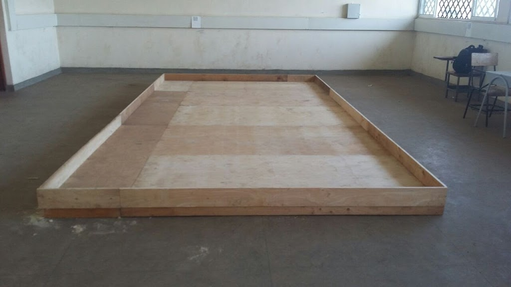

Game Field
The next important item a serious Robotics team should have is the game field. The field is usually well documented and is circulated together with the Game rules for the year. In most cases, both the rules and the field are included in one document, but in some cases they have been two separate documents.
Game Field Structure and Specification
- The field consists of a Game Area having the dimension of 6m x 6m and surrounded by a wooden fence with a height of 0.15m and a thickness of 0.025 m. The game field is divided equally for two teams by a wooden fence with a height of 0.15m and a thickness of 0.025m.
- White lines with a width of 0.03m made of non shiny sticker are drawn on the floor of the Game Area at a distance of 0.3M from each other.
- The Game Area consists of a starting zone, voter verification area, ballot box picking zone, voting booths and the ballot boxes.
| Roboken 2017 - Game Field |
Building the game field often requires special skills and dedication, especially when it comes to precision and following the design to the latter. Otherwise, your team may practice on a non-standard field which may make them suffer on the actual field. You can always hire a specialist to make it for you, or just do it yourself if you can.
The field is usually designed as a pair in such a way that half of the field mirrors the other half. This is done so because at any given time there will be two teams competing on the field, Team A and Team B, or Team Blue and Team Red, depending on the naming. But for practice purposes, you may not need both of them and you can safely make just one half for your team to practice on.
The game field is usually built in a large room with enough space to accomodate at least half of the field and still leave some space for other activities. The following pictures shows a game field in development and a complete one.
|  | |
| Starting to build the game field | Starting to build the game field |
| Naomi Nyagol (Electrical Engineering) tests a robot in a compete half of the game field. Looking on is Mr. Opondo (Electrical Engineering Lecturer) | |
In my experience, it's important to build a flexible field (read "a field that is in parts") one that will give you an easy time in case you want to dismantle and easily move with it to a different location or even to the competition venue.